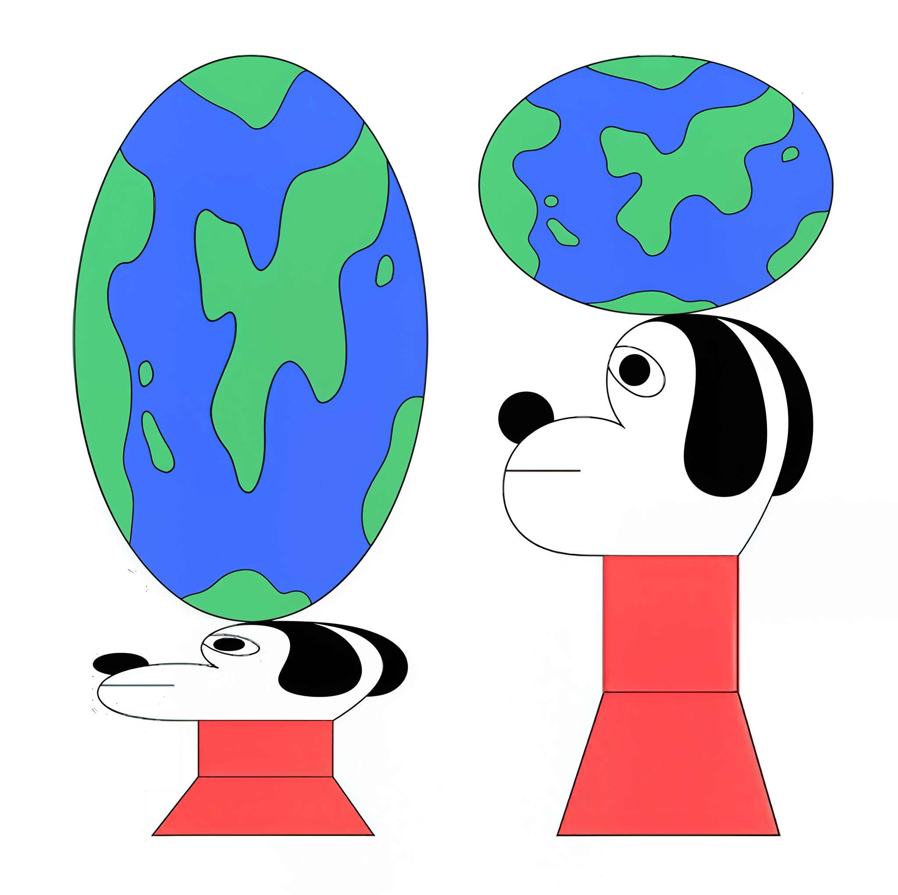
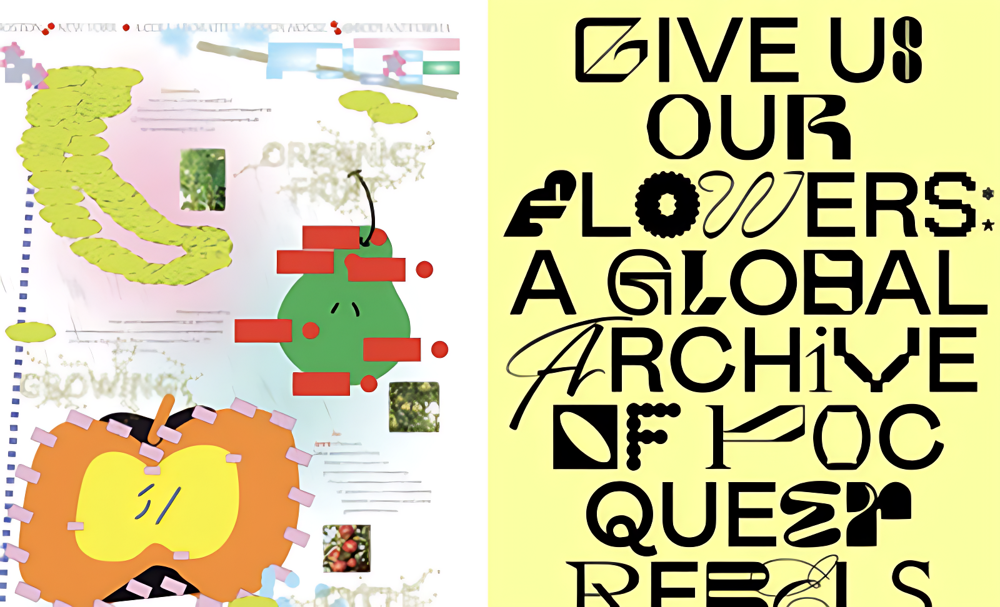
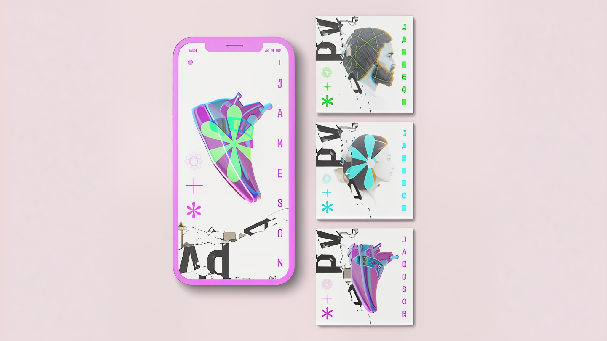
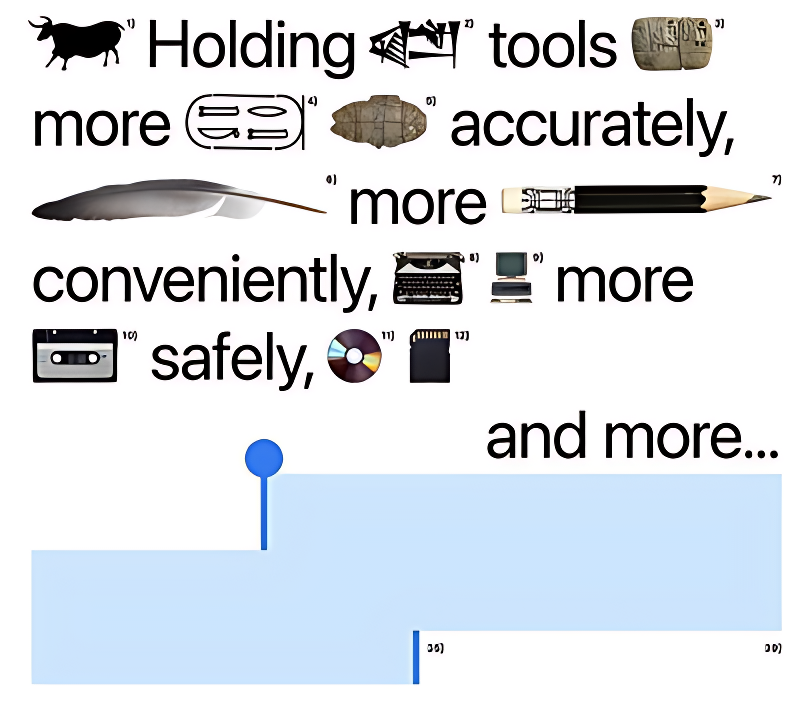
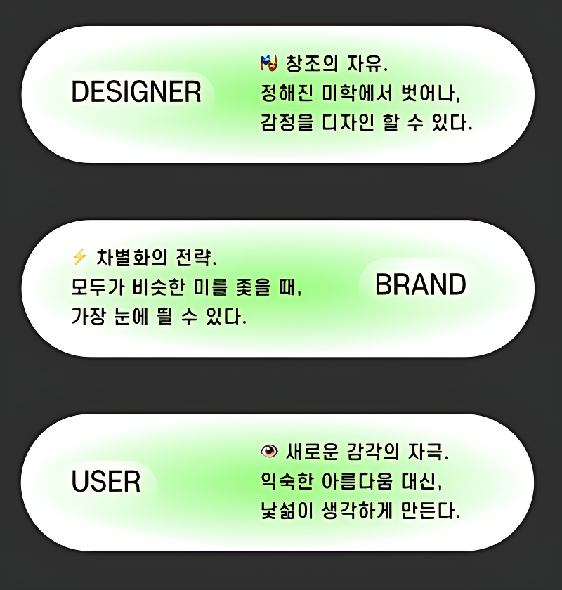
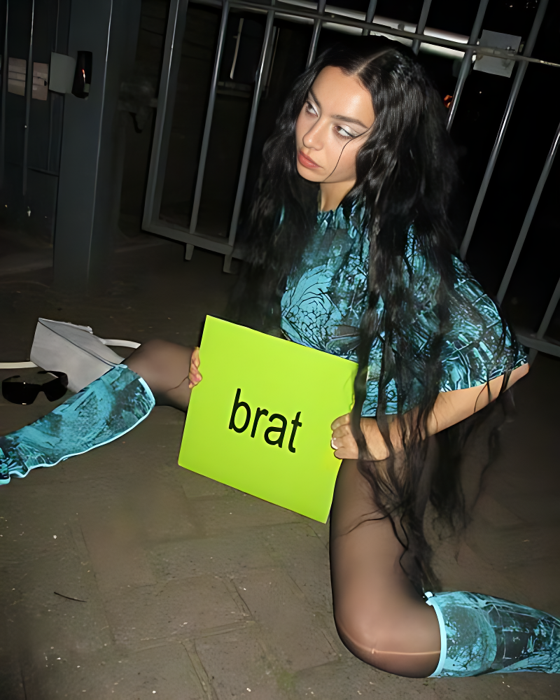
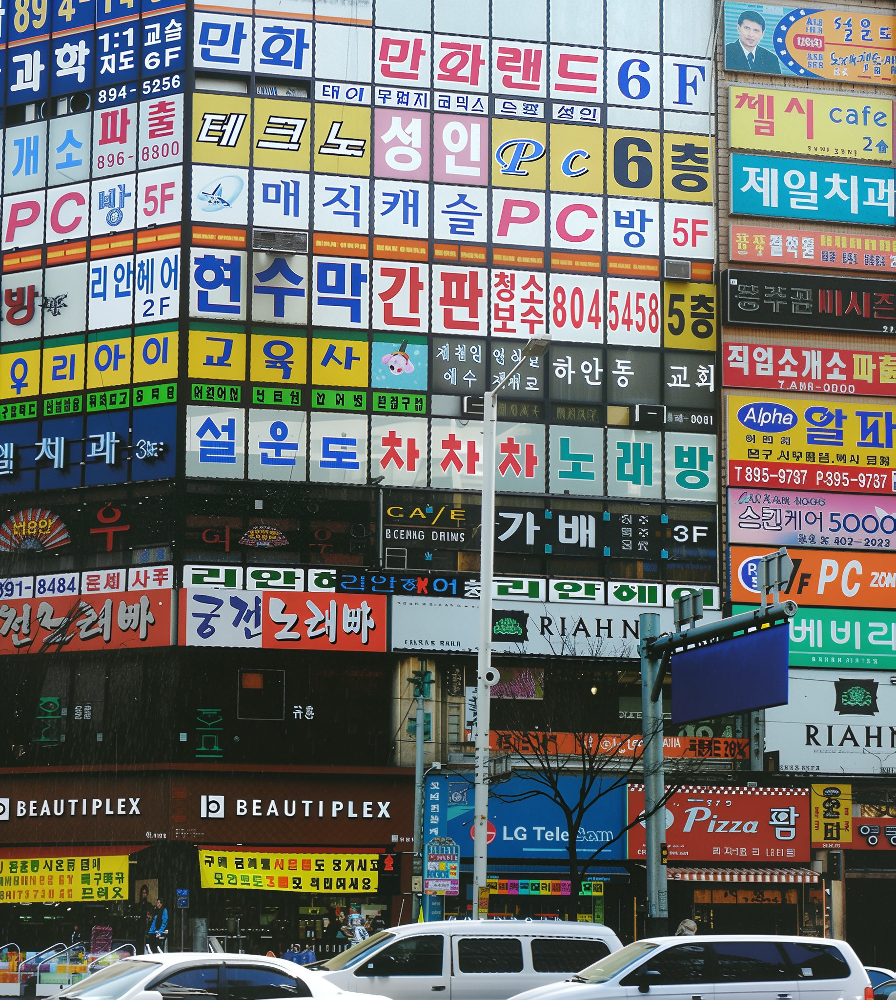
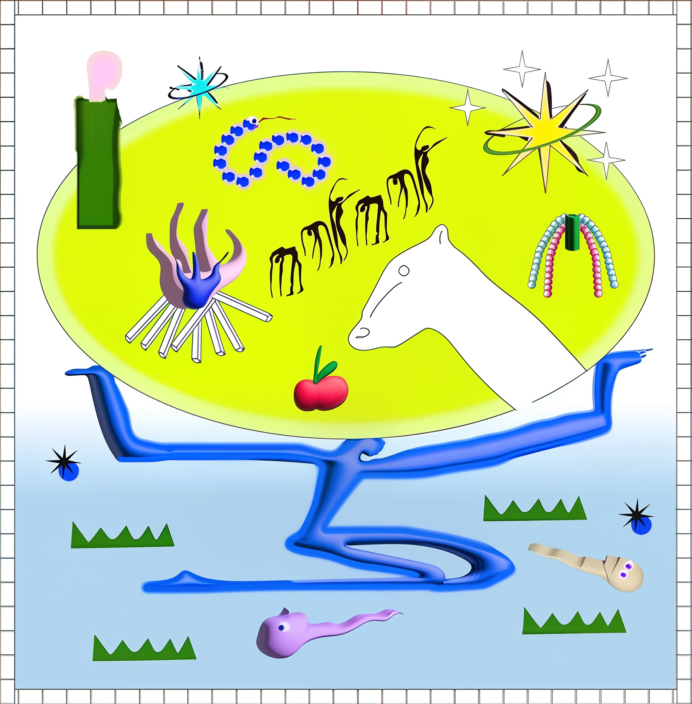

B급 감성 디자인 트렌드

한 디자인에 온갖 효과 사용하기, 서로 다른 폰트 섞어쓰기, 저해상도 이미지 사용하기, 대충 그린 일러스트 쓰기 등
요즘 디자인 왜 이래요?

자간, 행간, 가독성, 고해상도 등을 중요시했던 보통의 디자인에서 벗어나 규칙이 파괴된 과감한 디자인 기조가 유행하는 중이다.
예상치 못한 시각 요소를 사용하는 것이 포인트이다.

각각의 부조화스러운 요소들이 한데 모였을 때, 흥미로워 보이게 구성되는 안티 디자인의 영역이 천재적이라는 의견이다.


찰리 xcx의 2024년 발매한 앨범 표지. 저해상도에 투박한 녹색, 간단한 영문 글자가 끝이다. 찰리가 제일 못생긴 앨범을 만들자고 해서 탄생했다. 그 결과 엄청난 유행의 선구자가 되었다.

한국 거리의 간판은 한정된 직사각형 공간 안에 글자, 사진, 가격, 로고, 전화번호 등 모든 요소를 욱여넣거나, 원색 위주의 자극적인 색을 주로 사용하여 여러 간판들이 모여 있으면 보행자의 시각적 피로를 유발한다. 하지만 이러한 한국 간판 디자인은 오히려 매체들에서 한국 컬쳐의 트레이드 마크가 되기도 한다.

디자인에 정답은 없지만 쓰임새와 사용자(타겟층)에 맞춘 유연한 디자인이 필요하다. 안티 디자인을 남발하는 것에 주의해야한다.

디자인은 나를 표현하는 도구이자, 다른 사람을 생각하는 마음이다. 나만의 개성을 담되, 사용자가 편안하게 느낄 수 있도록 배려하자.
-이케아 디자이너 일스 크로포드